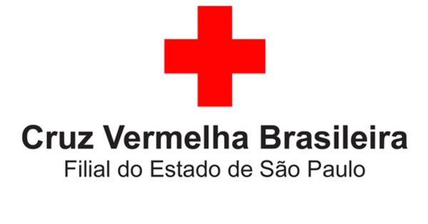
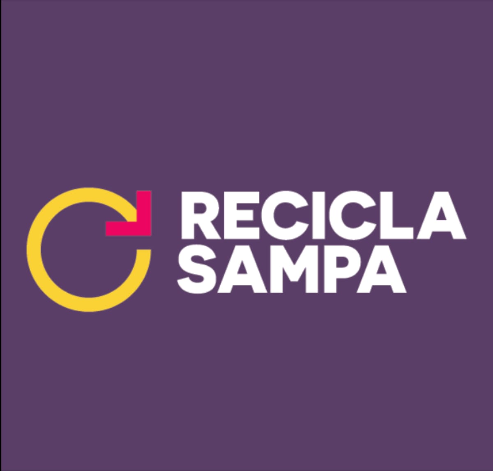

Parceiros Sweet Carrot
Cruz Vermelha
A Sweet Carrot é uma empresa também comprometida em ajudar e apoiar o bem-estar do ser humano, então nós prestamos ajuda a uma ONG internacional dedicada a prestar ajuda humanitária em situações de emergência e promover o bem-estar em todo o mundo. Através de parcerias e doações, a Sweet Carrot contribui para o alívio do sofrimento humano, permitindo que a ONG Cruz Vermelha continue fornecendo assistência médica, apoio social e educação em momentos de desastres, conflitos e necessidades
Recicla Sampa
A Sweet Carrot é uma empresa que usa muitas embalagens e materias possiveis de serem reciclados e pensando nisso para um mundo melhor e mais sustentável decidimos apoiar a ONG Recicla Sampa, uma organização dedicada a iniciativas de reciclagem e sustentabilidade em São Paulo. Através de parcerias e doações, a Sweet Carrot contribui para o trabalho da Recicla Sampa na promoção da reciclagem, educação ambiental e no combate ao desperdício, ajudando a construir um ambiente mais limpo e sustentável na cidade.
